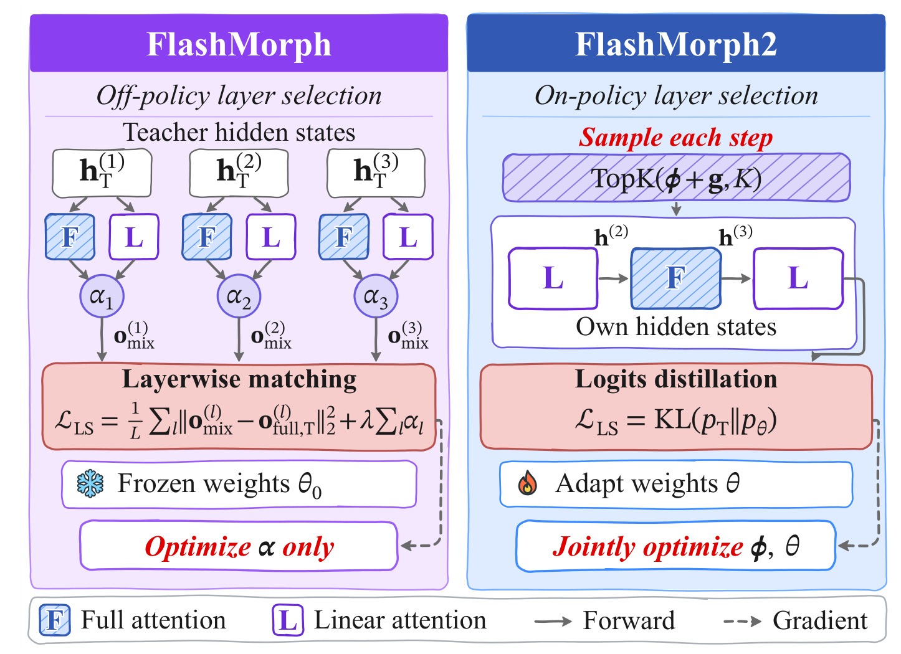
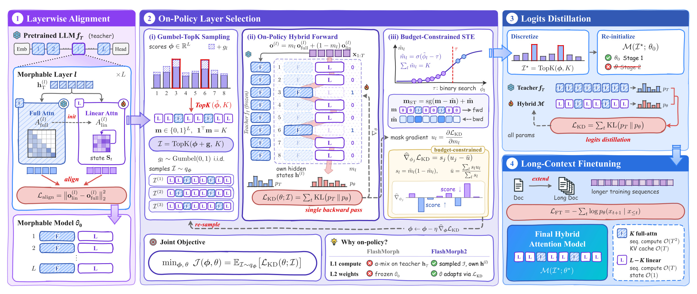
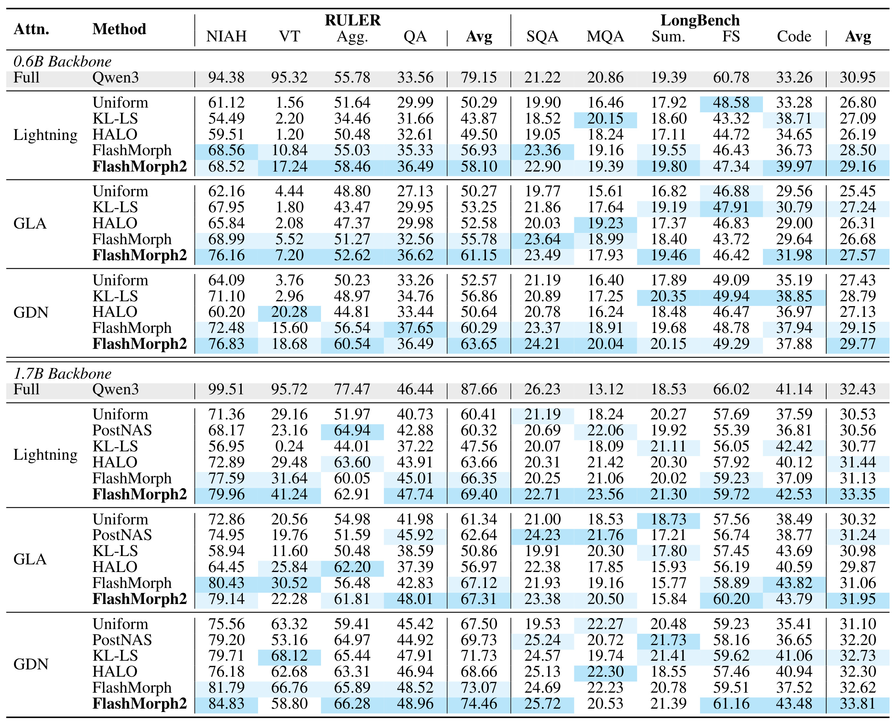
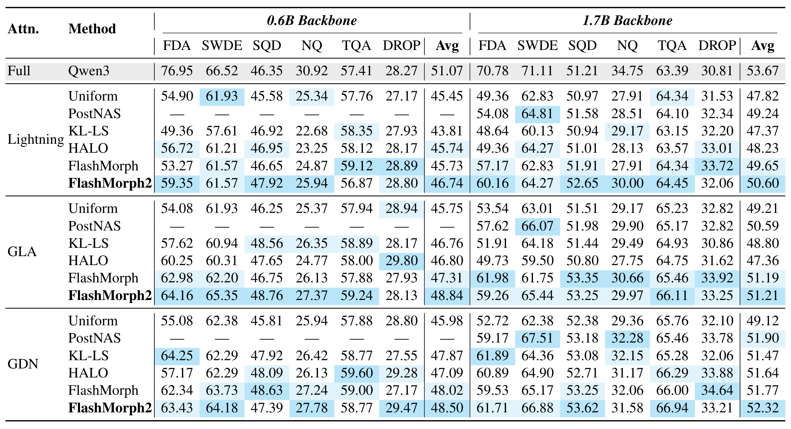
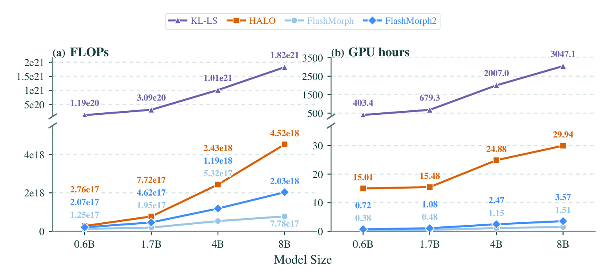
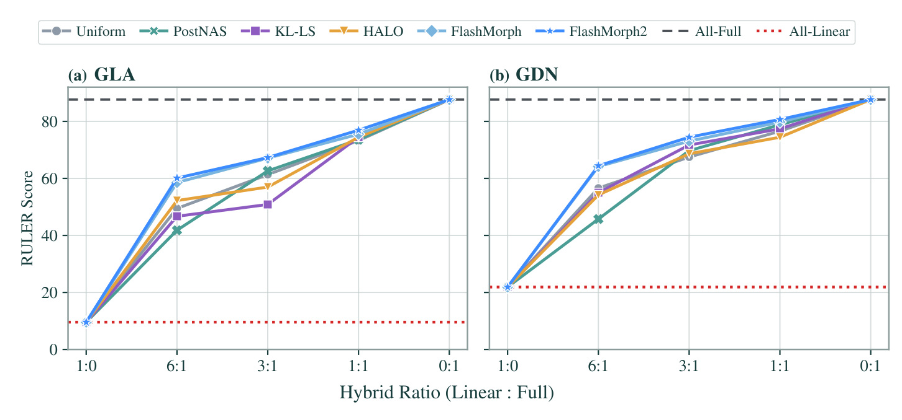
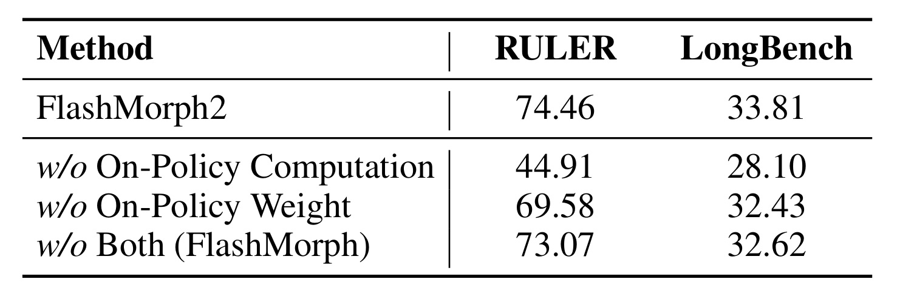
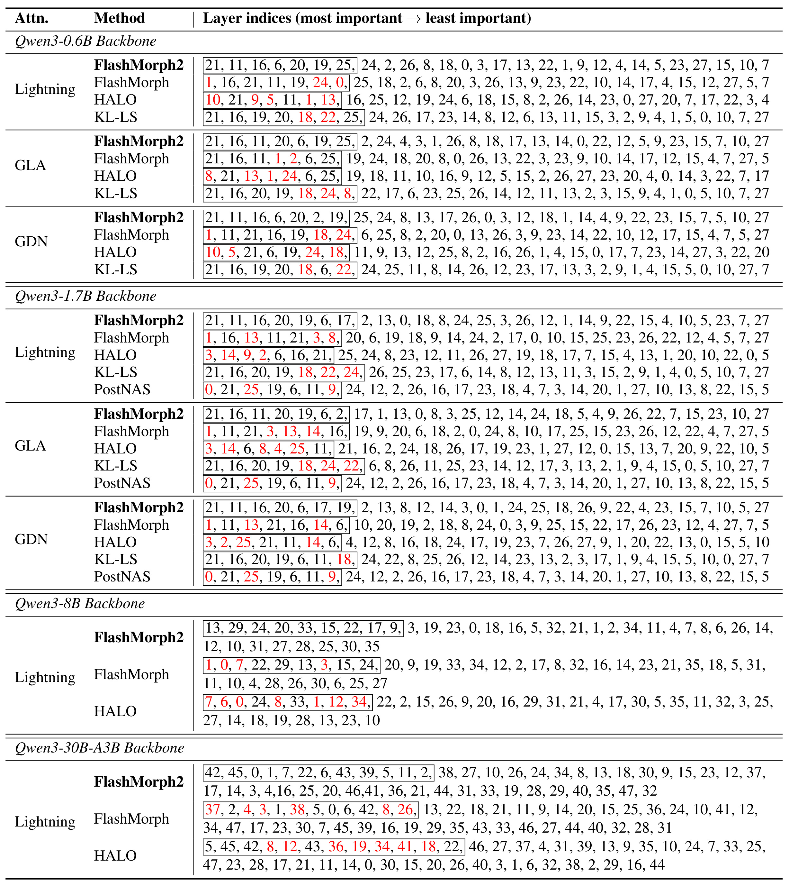
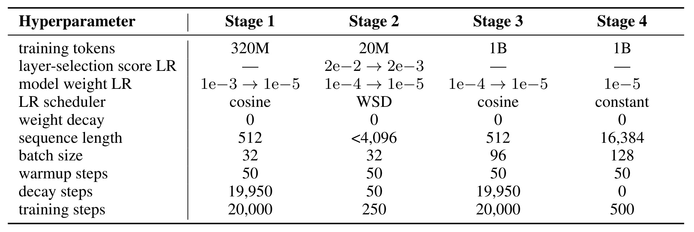
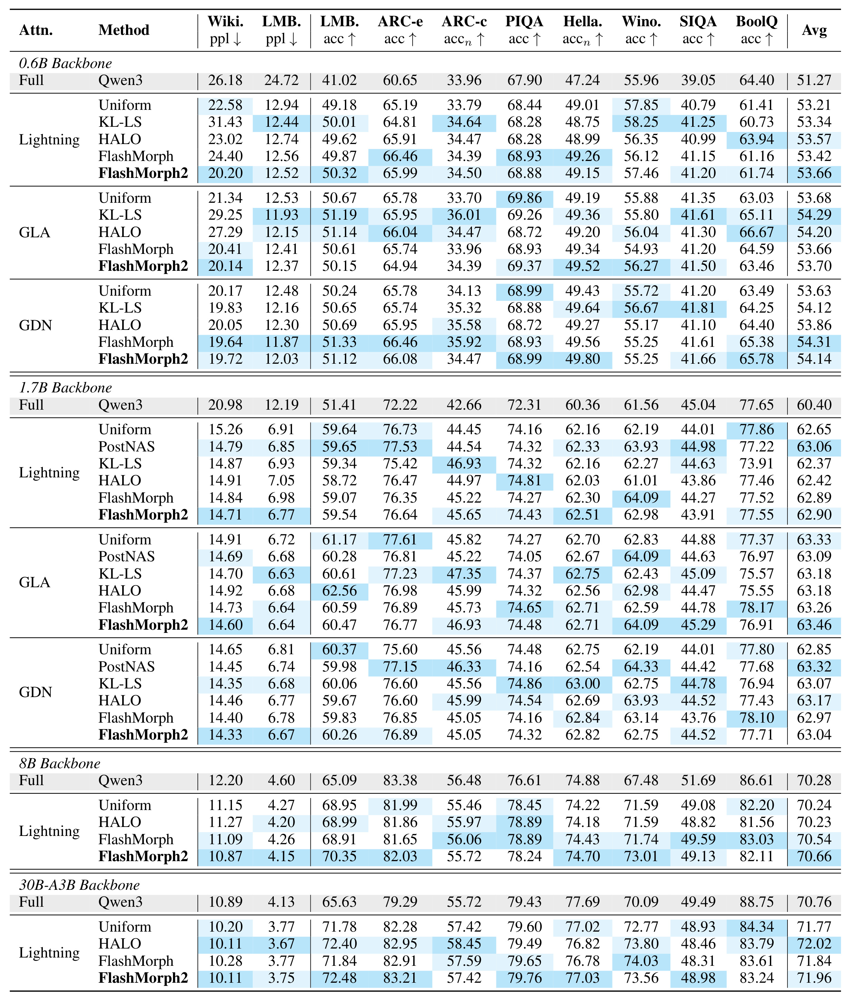

FlashMorph2：按离散混合架构的实际前向来选层
- 论文题目 On-Policy Morphing into Hybrid Attention Models
- 作者 Disen Lan、Xuanda Wang、Jianbin Zheng、Huafeng Kuang、Wei Tang、Yu Cheng
- 机构 复旦大学、字节跳动 Seed。合作机构为南洋理工大学，一作在字节跳动 Seed 完成相关工作。
- 版本 arXiv v1，2026 年 11 月 18 日 17:45 UTC 提交，北京时间 11 月 19 日 01:45。同日进入 arXiv 公告批次。
- 论文链接 arXiv:2611.24809
- 代码与项目 截至 2026 年 11 月 20 日，本轮未核验到论文专属公开代码。文中的线性注意力实现库属于依赖。
FlashMorph2 将一个预训练 Transformer 的部分注意力层改成具有递归状态的线性注意力。它搜索的是在给定全注意力预算下保留哪些层，再以公共初始化重新训练选定架构，考察布局在同样恢复配方下能达到的质量。
混合注意力转换要在预定预算下决定哪些层继续使用全注意力。连续分支插值和教师强制的隐藏状态不能反映离散混合架构的实际计算，而在选层时冻结权重也没有考虑模型在随后的恢复训练中会怎样适应。
1. 背景和问题
1.1 压缩的是注意力状态，重新分配的是层预算
以预训练的自回归模型为起点，做长上下文部署时需要同时满足两个约束。一方面，提示、历史对话或用户行为要能覆盖足够长的时间，模型才能在出现明确问题或新候选时回到对应证据。另一方面，全注意力会同时处理很多位置间的关联，全序列计算随长度平方增长，逐 token 解码时每层也要保留随历史增长的键和值。只缩短输入可以降成本，但用户需要的证据可能正好在截断线外。线性注意力提供另一种做法，把截至当前的位置压进固定形状的递归状态，新 token 更新状态并从其读取。对固定头宽，状态规模不随上下文长度线性累积。这里的成本优势来自时间维的状态接口，和把候选数、头数或整个模型层数缩小是不同的杠杆。
递归压缩会改变模型访问旧信息的方式。全注意力使查询仍可直接匹配某个历史键，并给它对应的值较大权重。在线性模块中，多个键值外积经过更新、衰减或覆盖后留在同一状态，之后的查询读到的是这样的聚合。一个出现在很久前的稀有编号、事件属性或者能闭合多步推理的中间变量，在整体语言建模上可能只有很小权重，却能决定某道题是否答对。随着压缩增大，混合架构保留少量全注意力层，让精确位置检索与线性传播各有作用；到底要留多少全注意力由服务预算决定，在同样层数下把它们放在哪里仍可能改变质量。
本文把层结构当作固定预算的组合。假设二十八层里保留七层，布局有上百万种，即使对一个候选只做少量恢复，遍历也难以作为常规转换工序。均匀间隔是简单的可复现基线，能让不同深度都接触全注意力，但假定各层的读写职责相近。若某些中间层需要解释早层留下的信息，某些晚层负责从已有状态中提取后续输出，预算就不一定应平均分摊。反过来，没有可重复的同预算对照时，也不能凭某几层的注意力可视化断言最佳布局。重要性依赖其余层如何配置，独立地问每层是否重要和联合地问哪七层最能协作是两个试验。
1.2 恢复后的模型才是评估对象
常见低成本办法是先为每层造一个可用的线性分支，再评估单层换掉时局部近似误差或模型质量的损失。HALO 用逐一替换的质量变化构造排序，KL-LS 用恢复单层后蒸馏的 KL 值评估，PostNAS 则训练可切换的超网并用任务引导的束搜索安排层。FlashMorph 的代理更轻：从相同教师隐藏状态分别得到两分支输出，在各层用连续权重插值并拟合教师，然后按门值保留有限数量的全注意力层。其成本优势很清楚，局部误差可以在同一参考输入上比较，一开始无需为大量候选分别跑全模型恢复。代价是局部受控测量没有观察运行架构时真实出现的信号分布。
第一个偏差发生在前向状态。设早期一层线性化后少保留了一部分原始证据。用它自己的输出继续前向，后面的线性分支可能无法从已有状态复原这一细节，而合适位置的全注意力仍能从前面保留的键值组织信息。若后面每层都喂教师自身准备的干净输入，这个组合效应不会进入其局部代理分数。连续插值还允许两个分支提供加权结果，下一层最终上线时只能接其中之一。少数关键层的门在临界区差一点，选择后的整条路径却可能不同。更符合实际运行的是先指定一个恰有若干全注意力的离散配置，让每层在上游配置产生的状态上读写，再用最终输出衡量替换造成的净效应。
第二个偏差是训练时间上的参数状态。冻结对齐后的检查点在选层阶段方便归因，但某种布局的初始误差大，并不意味着它在共同恢复预算之后仍差。网络可以重新安排表征、让后续层接住前面分支的误差，有些布局的低起点可能比其他布局更易改进。理想目标因此要对每个配置执行同一恢复过程再比较下游结果。论文用短程共享权重适应来逼近这一步，让选层分数随着候选经过训练而变化。它没有逐个训练所有布局，估计值自然携带分支抽样与共享训练的偏差。论文最终重置到共同初始化，只保留候选布局，能避免把寻找布局时多出的训练直接算成最终模型质量的来源。
1.3 有哪些现象应当分开检验
这篇预印本借用了策略内学习的视角。在语言模型蒸馏里，自回归学生常在自己已经生成的前缀上向教师学习；这里诱导状态的是采样到的层架构，因此输入仍是训练数据中的 token 序列。冻结教师可以输出目标分布，学生的中间层使用同一次前向的真实隐状态，选层器从这种计算产生的误差听到自己的反馈。于是检验方法有两部分。一是找到的硬布局是否优于均匀插层或便宜代理，在同样恢复后保留更多长上下文能力。二是完整的可微选层需要付出多少训练代价。选层开销和最终固定布局的推理开销各自按其阶段衡量。
对于推荐或检索系统，可类比为在历史编码器或候选交互栈中保留有限的全局读通路。长序列存在分散的可回访事件，简单的局部替换诊断可能只测试每层读到原模型特征时的误差。如果多个近似层上线后依次缓存和读写，排序尾部的候选得分可能受到组合偏移。这只是研究问题的迁移，论文相关数据是语言模型训练与长上下文基准，具体推荐线上指标仍需要自己的候选、标签和时间切分验证。该文最有用的参照是设计验证时把所选布局、恢复后权重和部署状态分开固定，从而才能知道质量变化到底跟哪条链路有关。
2. 方法
2.1 从预训练投影构造可切换层
考虑第 $l$ 层和第 $t$ 个位置。全注意力在因果前缀上计算 query 和所有 key 的相似度，用 softmax 权重读取 value，线性注意力的通用形式先把当前键值合入状态，再以 query 读取固定维度的矩阵。两种计算和硬门的前向输出见原文公式一到三。
符号解释： $q_t,k_i,v_i$ 分别是查询、位置 $i$ 的键和值，$j$ 只用于归一化分母，$d$ 为头宽，$W^O$ 为输出投影。$S_t$ 为截至位置 $t$ 的递归状态，$o_{\mathrm{full},t},o_{\mathrm{lin},t}$ 是两种注意力在该位置的输出。集合 $I$ 包含保留全注意力的层，$m_l$ 为第 $l$ 层的二值选择，$o^{(l)}$ 为送往该层后续计算的序列混合输出。线性状态公式展示通用读写形式，Lightning、GLA 和 GDN 的衰减、门及增量更新不都等于简单的加法。两分支都读取当前混合模型传入该层的隐藏状态时，硬门会把上游布局的影响带到下面的层。
阶段一通过预训练骨干的相应投影初始化线性分支，冻结骨干并用同一教师层输入训练各线性分支。与随机初始化相比，这样给后面的组合搜索提供一套非退化的可替换模块。对照 FlashMorph 在第二阶段沿用教师输入，在固定参数 $\theta_0$ 的条件下让全、线性输出线性插值，损失仍然只看层内匹配。下面把两段代理计算并排记下来。
符号解释： $L$ 是骨干层数，$h_T^{(l)}$ 是教师在第 $l$ 层注意力模块的输入，$A_{\mathrm{lin}}^{(l)}$ 和 $A_{\mathrm{full}}^{(l)}$ 为同层两个分支。下标 $T$ 表示以教师隐藏状态为输入，$\alpha_l$ 是原方法选层的连续门，$o_{\mathrm{mix}}^{(l)}$ 是插值后的输出，$\lambda$ 调节保留全注意力的惩罚。前一项产出对齐检查点，后两项是原 FlashMorph 的局部选层代理。FlashMorph 在优化结束后按门值选实际的前 $K$ 层，因而训练时局部目标的软插值和最终的层预算约束分属两个操作。

Figure 1 左侧把三列教师隐藏状态各自画成独立输入，相同编号处的全注意力与线性注意力可同时提供数值，圆形的门只在本层决定比例。底部损失比较本层混合输出与教师全注意力输出，虚线梯度向上更新门，雪花表示模型权重冻结。右侧的第一步则扰动分数并直接取满足预算的硬层集合，三层例子的有效输出按线性、全、线性顺序传递。第二层的输入来自前一层混合模型自己的计算，第三层再延续，最后才把学生输出分布与教师进行对照。图中用两条回路说明模型权重和架构选择参数一起更新。这里有两个可以单独验证的差异：离散网络自身的状态改变了衡量哪一层重要时的输入，恢复风格的权重训练让这一衡量随参数适应变化。右侧的单一路径描述的是输出依赖，直通梯度的实现仍需获得两分支的输出差。把图读成搜索时只计算被选分支会低估选层所需计算，把两分支都前向评估又称为软混合则会误判真正送入下一层的张量。教师依然产生蒸馏目标，只是它的隐藏状态不再替代学生混合路径的状态。图里各教师状态对应的是同一文本的不同深度，不能把它们当成彼此独立的语言输入。把这个三层例子放大到二十八层后，每种硬布局都仍限定在全层七个的预算。第一层若造成严重信息损失，第二层即使采用全注意力，也只能在实际已传到该层的 token 表征上重新组织键值。右侧损失的改进可由较好的层位置或层间补偿共同产生，因此比单层误差多了一层与部署路径一致的检验。图并未给出任意布局都能恢复的保证，也没有要求在线判断该请求应选什么布局。
2.2 策略内采样与共享权重适应
FlashMorph2 输入阶段一的可切换模型和训练序列。它为各层维护分数，初始值相同。每一步按独立的标准 Gumbel 噪声扰动分数，以无放回方式得到恰好 $K$ 层的全注意力集合，将硬选择映射为二值门。采样使临界分数附近的不同布局也会被看见。共享模型按照硬配置运行，权重和选层参数从同一次输出损失得到梯度。
符号解释： $\phi$ 是各层选层分数向量，$g_l$ 是层 $l$ 的独立噪声，$K$ 是架构可用的全注意力层数，$I$ 为采样集合，$m_l$ 是它的硬指示变量。$q_\phi$ 为扰动取前 $K$ 所诱导的架构分布，$\theta$ 为可切换学生共享参数，$\mathcal L_{\mathrm{KD}}$ 为当前配置在同一训练输入上的教师分布蒸馏损失，$\mathcal J$ 为架构采样期望下的优化目标。期望用训练步里的样本近似。选中分支收到其权重梯度，未选分支需要提供掩码比较所需的数值，但其参数没有这一步的反向更新。

Figure 2 从左到右依次展示可切换模型的产生、搜索和定稿。第一栏把冻结教师的隐状态送给该层的两种注意力，用相同输入下的输出差训练线性分支，产物是包含全部候选分支的对齐模型。第二栏把采样过程与前向过程分开画出，扰动分数先确定唯一的硬布局，随后沿一种选择链传播学生状态，终端词表分布才和教师比较。蓝色全注意力框与紫色线性框的布局在不同步间变化。共享权重接收学生路径的梯度，另一个反向分支通过预算约束的直通估计更新打分。第三栏保留无噪声排序的前若干层，明确勾选阶段一参数并划掉阶段二参数。这种重置让比较使用共同的恢复起点，搜索权重的短训练只用于改变选层。第四栏从蒸馏权重继续长序列监督，部署只保留每层选中的模块。右下状态复杂度按固定头宽、以序列长度为变量：全注意力层仍按长度持有 KV，线性分支持有递归状态，整网有全注意力层时不会把所有上下文缓存都变成常数。把终端业务任务的分数放在同样恢复后比较，才可看到选层上的差异。中间三个子面板还把两条信号流区分开。架构打分接受对扰动后软门的反向信号，下一步用更新过的分数重新采样；权重适应则只优化实际启用分支及共享骨干的可训练参数。离散化后的权重重置看似丢了一段已完成的训练，实则把“某种配置对全词表蒸馏是否容易适应”作为搜索期评估，保留该评估影响架构的结果。相同架构直接继承短程共享权重的做法可能有独立价值，但那会同时改变恢复起点，图中没有测这条路径。
2.3 预算约束的直通梯度
Top-K 对连续分数在组合不变时几乎处处没有有效导数。论文让前向使用硬门，反向经过一个保持总预算的平滑近似。每层较大分数对应较大的软门，但公共阈值由所有层决定，通过二分找到，使软门之和等于同一个预算。直通写法在数值前向消掉软门，在反向令梯度流过软门。
符号解释： $\tilde\phi_l$ 为扰动分数，$\tilde m_l$ 为第 $l$ 层的软门，$\sigma$ 为 sigmoid，$\tau$ 为共同门限，$m$ 是二值掩码向量，$m_{\mathrm{ST}}$ 是前向等于 $m$ 的直通变量，$\operatorname{sg}$ 阻断括号内的梯度。对实际搜索的 $0<K<L$，门限使总软预算固定。求解门限的二分可在自动求导图外运行，反向仍必须通过隐式微分补入门限依赖，否则会把所有门当作相互独立。
符号解释： $j$ 指正在求梯度的分数坐标，$u_l$ 是损失对硬前向处掩码的局部梯度，$s_l$ 是第 $l$ 层软门的局部斜率，$\bar u$ 为按斜率加权的掩码梯度均值。帽形符号表示对离散期望目标的有偏梯度估计。若在某一层把全注意力的比例从零向一挪，局部输出的变化沿全注意力与线性注意力之差，和上游传回的损失梯度点乘形成 $u_l$。共同阈值使一层软门升高时其他位置需要退让，减去均值正是这种耦合的体现。可以用整体加同一常数不会改变采样顺序和软门的性质检查实现，所有分数梯度之和应在数值误差范围内为零。若分数过早饱和，软门接近零或一，斜率变小，后续探索会弱化。这是梯度接口可推得的复现关注项，论文未给饱和失败率。
2.4 固定布局后的蒸馏与长序列恢复
学习完分数后，不再加入随机噪声，取无扰动分数最高的 $K$ 个层作为最终全注意力集合。作者恢复阶段一的 $\theta_0$ 后才运行阶段三，全量参数随固定硬布局做词表蒸馏。阶段四使用更长的原始文本序列做下一 token 微调。两个目标如下。
符号解释： $t$ 是预测位置，$x_{\leq t}$ 是实际训练文本的可见前缀，$x_{t+1}$ 是下一真实 token，$p_T,p_\theta$ 是教师和硬混合学生的预测分布，$D_{\mathrm{KL}}$ 为完整词表上的前向 KL。选层阶段采用第一项的恢复代理，定稿后用同一蒸馏口径训练固定架构，最后用第二项配合较长输入。硬配置及最终权重在线保留，搜索期的软门、噪声、阈值、两分支差量和冻结教师不进入部署。该设计关心比较布局时的归因，复现若试图保留搜索期参数，需要单独标注初始化变化并重新对照。
3. 实验结果
3.1 固定预算的长上下文、精确召回与局部损失
主文的六组条件是 Qwen3-0.6B、1.7B 与 Lightning Attention、Gated Linear Attention、Gated DeltaNet 的交叉。两模型都是二十八层，常规设置保留七层全注意力，线性与全注意力层数比为三比一。线性分支由 flash-linear-attention 实现，采用论文注明的 QK 归一化、GQA 到 MHA 转换、输出归一化和输出门控，两类分支都使用 RoPE。全部训练数据随机取自 DCLM。复现时要保持这些改造与对照共享，直接将全注意力换成任意第三方线性块会同时改变基础初始化和单层逼近质量。
对照包括均匀间隔、PostNAS、KL-LS、HALO 和 FlashMorph。各选层方式在共同对齐权重和共同恢复设置下比较，部分小模型条件的 PostNAS 未报告。全注意力 Qwen3 单列提供参考，因为其使用了不同的全注意力层预算。RULER 共十三项合成或控制任务，覆盖单针和多针检索、变量追踪、聚合及问答。LongBench 使用十四项任务，含单文档与多文档问答、摘要、少样本与长代码。表头的类别是分组，Avg 根据底层任务汇总，手算时不能等权平均四个或五个类别分数。

Table 1 先按两个骨干分块，块内选择相同的线性机制后纵向看不同保留方案。右侧两个 Avg 分别覆盖十三项 RULER 和十四项 LongBench，不能混成一个综合质量单位。作者报告相对 FlashMorph，六组 RULER 均值由 63.26 到 65.68，增加 2.42 分，LongBench 由 29.86 到 30.94，增加 1.08 分。六组的两个平均分均提高，但幅度分布不均。零点六十亿参数的 GLA 在 RULER 上由 55.78 到 61.15，提升 5.37 分，十七亿的 GLA 由 67.12 到 67.31，仅高 0.19 分。逐类别还能看到被平均掩盖的损失：十七亿 GDN 的变量追踪从 66.76 降到 58.80，同组的针检索由 81.79 升至 84.83，长代码从 37.52 升至 43.48，这些变化可以同时存在。若任务依赖沿历史更新某个精确变量，部分子项的下降会比总均值改善更影响选择。表中十七亿全注意力 RULER 87.66，超过同组的各个混合均分，LongBench 32.43 却低于部分混合行。全注意力参考与继续训练后的混合模型的差异兼含恢复训练及架构变化，从这个对照还不能推知哪部分来自转换。工程迁移时应先按一个骨干及线性模块固定预算，回看近端、远端和冲突历史几个任务，再把质量与资源一起作为筛选条件。为了排除单一汇总行取错，可以按表格分别提取六个 RULER Avg 做等权复算。原方法六行是 56.93、55.78、60.29、66.35、67.12、73.07，本文对应 58.10、61.15、63.65、69.40、67.31、74.46。这个分组算式可以得到作者所报的平均改善，避免将某组绝对分数误当所有配置提升。由于表列展示的是结果点估计，没有画各次搜索的方差，特别小的提升适合定为后续复验对象。高值染色也是对选层方法的相对排名，全注意力灰行是独立参考，不参与该染色范围。
另一项实证使用真实文档与问答的六项强召回任务。FDA 需要从 PDF 找键值，SWDE 从结构化的网页中做关系抽取，剩下 SQuAD、Natural Questions、TriviaQA 和 DROP 提供不同的文本问答需要。它们检验在上下文中检索证据后能否给出任务答案。分数统计基于公开任务评估，和向量召回系统的 Recall@K 口径不同。

Table 2 横向分成零点六十亿与十七亿两组模型，每个模型都列出六个子任务及均值。七层预算下，相对 FlashMorph 的跨组合汇总由 48.94 到 49.70。零点六十亿 GLA 的均值由 47.31 到 48.84，FDA 从 62.98 到 64.16，SWDE 从 62.20 到 65.35，反映不同证据形态也可能一起改进。十七亿 GLA 两个均值 51.19 与 51.21 只差 0.02，FDA 和 Natural Questions 还有下降。十七亿 GDN 中，FlashMorph2 的 FDA 为 61.71，较原版 59.53 更高，但略低于 KL-LS 的 61.89，DROP 由 34.64 降到 33.21。固定预算下布局可能偏向部分上下文操作；表中的任务排序支持更好地平衡六项质量，并没有证明每类精确召回都提高。全注意力十七亿的总平均 53.67 仍高于 FlashMorph2 在三种线性分支中的最佳 52.32。若依赖特定业务对象召回，应检查原始候选索引、查询证据距离和混合布局实际保留位置，而不能把综合问答平均分直接当线上收益。表内横线和列顺序提供了另一项鉴别：小模型未给出 PostNAS 的多组结果，不能把破折号折成零或作为均值的数据项。在零点六十亿 Lightning 情形，基线 FlashMorph 到新方法的 FDA 为 53.27 到 59.35，但 TriviaQA 由 59.12 到 56.87，说明看同一骨干与线性模块下的配对差值仍要保留任务分解。如果部署是高频用户问题的文档抽取，先匹配数据模态、位置和答案长度，然后看该组证据是否与自己的任务相似。作者报告的是任务得分，没有披露市场流量中命中或推荐准确率的任何分母。
3.2 选层开销、预算灵敏度与条件消融
选层开销与恢复训练或在线服务开销有不同的控制变量。论文把 FLOPs 和累计 GPU 小时记在选层阶段，曲线有四个骨干尺度。因为 KL-LS 要做多次单层评估，相比其他方法出现断轴。共同恢复流程仍需单独支付，所选的层在部署时只运行一个分支。

Figure 3 的横轴为零点六十亿、十七亿、四十亿和八十亿参数。左纵轴是 FLOPs，右纵轴是累计 GPU 小时，两边都用断轴容纳 KL-LS。按曲线点注记，FlashMorph2 的总选层 GPU 小时依次是 0.72、1.08、2.47 和 3.57，原版 FlashMorph 是 0.38、0.48、1.15 和 1.51。单看八十亿，方法约用 2.03×10¹⁸ FLOPs，原版约 7.78×10¹⁷，HALO 则约 4.52×10¹⁸。相对 FlashMorph2，HALO 累计小时约为其 8.4 到 20.8 倍，KL-LS 约 560 到 854 倍。作者给出的相对旧方法增加约 1.7 到 2.6 倍 FLOPs 和 1.9 到 2.4 倍 GPU 小时，反映跨层端到端计算及适应权重的额外工作。GPU 小时合计依赖设备数，无法直接读出一次流水线的挂钟时间。大基线与近基线的差异也不能合成一个平均加速。图中没有测部署吞吐或者第一 token 时延，训练开销上的差别不能兑换成上线的资源节省。固定相同全层预算时，可部署复杂度受长度与内核决定，而这张图比较的是确定哪几个层的成本。可用一个端点理解断轴的必要性：八十亿的 KL-LS 约 3047.1 GPU 小时，而 HALO 报 29.94。这个数量级差异在图中跳过一段纵坐标显示，肉眼线段不宜按连续尺度推斜率。对预算较小的转换任务，也可直接对同批尺寸用新旧 FlashMorph 的数字比较，作者的新选层约多一半到一倍以上的推理与反向工作，但只发生一次。横坐标是骨干参数规模，终端上下文吞吐另需横轴为提示长度、并发和缓存占用的实验。任何基线 FLOPs 与累计设备时的比例也取决于操作计数和实际硬件利用率，二者需要同时留存。

Figure 4 在十七亿骨干上把 GLA 和 GDN 分开画，横轴是线性与全注意力层数的比例，从左侧全线性的一比零到右侧全注意力的零比一，纵轴是 RULER 平均分。端点的层位置没有选择空间，因此不同搜索方法在该图的两端共用全线性与全注意力参考水平。全注意力是 87.66，换成全线性分别跌到 GLA 的 9.57 和 GDN 的 21.89。预算最紧的六比一条件，FlashMorph2 取得 60.12 和 64.45，比均匀间隔分别高 10.65 和 7.86 分，仍有明显的全模型质量差距。一比一预算下，得到 76.93 与 80.69，比原 FlashMorph 高 1.42 和 0.92 分，布局选择的边际优势较小。两种机制在一比零的可用水平相差很大，说明节省同样数量的全层所付的质量代价与替换件相关。横轴只表示层分配比例，更高的全注意力占比可能自然增加缓存和计算。工程上可先用可承受的预算做一条离散质量曲线，再选择业务质量满足门槛的布局。将两个同横坐标点作差能识别纯布局比较，将同方法跨横坐标作差则同时改变了资源。在图中靠近全线性端的预算最敏感，同一 GDN 骨干若从全线性改成最紧混合，平均分已有大幅恢复。图里的连接线是离散测点的视觉连接，不能用线性插值外推某个未测预算的质量。一比一曲线较密也可能意味着实际检索需求决定是采用快速均匀间隔或花费额外搜索成本。线上方案可先复测一组代表性长度，确认交互最长位置所受影响，再决定优先缩预算还是优化布局。

Table 3 固定十七亿 GDN 且保留七层全注意力，分别去掉新框架的两个组件。完整方案 RULER 和 LongBench 为 74.46、33.81。去掉策略内计算后变成 44.91、28.10，差 29.55、5.71 分。该设置选的完整层集合为零基索引二十、二十一、二十三、二十四、二十五、二十六、二十七，意味着前二十层都是线性计算。对照的实际布局说明后段集中可能让上游压缩误差缺乏补偿；原文没有对七层逐层替换来识别哪一层单独导致下降。冻结策略内权重并保留真实计算时为 69.58、32.43。两项一起去掉回到 FlashMorph 的 73.07、32.62，甚至比只去掉真实计算得分更高。把单项下降加起来会误设组件独立性，完整方案对共同对照的差只有 1.39 和 1.19。这个消融可用于排查单项替换失败的模式，其规模和注意力机制只有一组，无法据此给所有骨干计算可靠的预期收益。作者还列出固定权重变体中相对完整方案变化的层，说明适应本身足以改动前若干层的集合。若只比较有无权重适应，还可先锁定真实前向，再读两行差 4.88 与 1.38 分；这比拿完整模型和冻结旧软代理逐项相减更接近条件效应。没有相同条件下的搜索重复分布，无法给出各差值的显著性。从表和文中层号可以提出复现实验：在相同全层数下将少量后段全层移到前中段，仅改变层位置，然后跑共同恢复。若质量随后回升，再检查前缀自由访问和变量跟踪是否是最先修复的能力。当前这一表既没有因果识别具体哪层，也未给训练中每一步恢复难度的轨迹。

Table 6 把每组的零基层号按分数从高到低排列，框线只画最终保留的层，红色标出对照选择相对 FlashMorph2 不同的元素。十七亿 GDN 的本文实用集合在真实前向中按网络层序执行，表里排序则是二十一、十一、十六、二十、六、十七、十九。和原 FlashMorph 相比，其中有四个层重合，差集说明相同名义全注意力预算可以形成实质不同的层间间隔。最浅处并非一定保留：这一行用较早的第六层，而约三十亿激活参数的稀疏骨干那一行含零层和一层，也包括末段的四十二和四十五。八十亿与该稀疏骨干使用 Lightning 扩展，分别保留九层与十二层。作者给出的排序可作实现对齐，但完整序列尾部的轻微翻转在三比一设置下不改变模型，排名靠近预算边界的变化更值得关注。没有搜索种子间同层重合率，不能从一组表推知稳定性；同时选层落点还会随线性分支、骨干和预算一起改变。附录的排序验证配置时还要注意索引从零开始，列表横向读的是重要性而不是网络执行顺序。把预算从七层扩到十四层时，直接截取一份已经得到的完整排序只是一个候选，论文图里独立预算下的约束会在优化中影响分数竞争，不能默认复用排序等价。也可以用这一表排工程中的 off-by-one 问题，将真正构建的全层位置回读后比对方框，再在较短和较长的验证输入上确认全层 KV 和线性状态数。这样可以避免误将评分收益归给实际没有出现在模型里的层放置。
3.3 恢复训练分母与大骨干上的边界

Table 5 的四列可用来还原何谓共同恢复：阶段一是 3.2 亿 token、长度 512，阶段二是 2000 万 token、长度小于 4096，阶段三和四各十亿 token，长度分别为 512 和 16384。阶段二只有 250 步，并给层分数与模型权重分别设学习率。权重适应学习率从 1e-4 走向 1e-5，层分数从 2e-2 走向 2e-3，采用预热、稳定、衰减日程。阶段一仅对齐线性分支，阶段三重新拿对齐权重开始训练，阶段四继续的是阶段三的固定架构。选层 token 只占四阶段报告总数约 0.86%，这能核对正文所称不到百分之一。不同长度、分支、batch 数和教师计算会使每 token 开销有差异，这个比率不能当 GPU 时间占比。如果要把流程改到另一骨干上，最好让每种布局的恢复使用共同的对齐文件与数据顺序，再分别记录两类 GPU 开销。缩短共同恢复预算会改变方法所解决的目标，即从充分恢复下最优近似到给定短训下最快收敛。训练表中的步数随序列长度和批量一起变化，阶段四只有五百步但 token 预算接近阶段三。按表项目记录时应区分较短文本的词表分布拟合与较长文本的交叉熵，两者不能通过计算单步数来比较训练资源。在同样恢复设置下，阶段二输出的整数层布局是跨阶段传递的唯一新增工件，恢复前不混用阶段二的参数或学习率日程。若复现实验把搜索 token 与恢复 token 同时放大，即使最终分数更高，也不能据此估计单独换选层算法的边际改善。阶段四可单独计训练样本长度和更新量。
附录将性能测试扩展到 Qwen3-8B 和 Qwen3-30B-A3B，仅使用 Lightning。八十亿 Lightning 的 RULER 均值相对 FlashMorph 是 74.38 到 76.62，LongBench 是 36.89 到 39.36。三百亿总参数、约三十亿激活参数的稀疏模型，RULER 66.39 到 68.24，LongBench 35.69 到 37.60。两条证据支持跨模型大小的定点验证，不能据此宣称 GLA 和 GDN 都已完成大模型实验。效率图的四十亿横坐标也不属于主表的六组合。

Table 9 的 WikiText 与 LAMBADA 困惑度越低越好，后面的八项是准确率或归一化准确率，右侧 Avg 的分母只有八个零样本准确率。合并困惑度或把其中一项当作全任务平均会扭曲比较。八十亿 Lightning 的 FlashMorph2 取得 WikiText 困惑度 10.87、LAMBADA 困惑度 4.15、准确率均值 70.66，FlashMorph 分别为 11.09、4.26、70.54。在零点六十亿 GDN 上，原 FlashMorph 的均值 54.31 高于本文的 54.14，WikiText 困惑度也由原版 19.64 升到 19.72。约三十亿激活参数骨干的本文常识均值 71.96 低于 HALO 的 72.02。有些完整模型行弱于混合模型的常识均值，但多个方法共同做过额外恢复，比较的训练预算与原全注意力参考不同。这组指标说明长上下文平均分的优势可以和一般语言能力的相近表现共存。实际评估仍要保留应用的主要准确率、困惑度和精确检索三条线，避免把一种指标的改善代作另一种能力的证据。另一个可从表中读出的口径是三百亿稀疏骨干的 LAMBADA 困惑度，FlashMorph2 的 3.75 比原版 3.77 略低，却没有超过 HALO 的 3.67。同一行中，BoolQ 的 83.24 也低于全注意力 88.75。若用这些分数决定上线，应先锁基座检查点和任务类别，选择适合业务的最低门槛，而非用跨任务平均把下退项平均掉。论文没有报告接受阈值，也没给该组的多种部署精度对照，精度或后端改变的扰动可以和选层改变的扰动独立测量，以防二者互相掩盖。
4. 总结
4.1 方法中可复用的验证设计
本工作把层架构搜索和最终恢复训练拆开。选层用自身状态沿硬架构前向，学习的是各层在既定预算内的相对取舍。恢复则返回共同检查点，只保留选层决定，给每个布局公平的数据和权重起点。重置动作尤其重要，它把优化过程中的权重适应变成质量代理的一部分，而没有让这个过程替代实际部署模型的训练。在有历史编码和候选交互两段的推荐系统里，如果准备把一些精确交互层改成固定状态近似，可照这种对齐尝试先用同一组用户历史和候选做硬前向，再测布局恢复后的结果。历史压缩层的输出还可能被缓存，验证时应明确不同布局是否共享同一种缓存及版本，避免模块的近似误差和历史数据新鲜度叠在一起。
4.2 局限及后续检验
- 模型覆盖以 Qwen3 家族为主，小骨干有三种线性替换件，大骨干只有 Lightning。多个骨干规模的结果不足以推出任意预训练架构的规律，尤其不能推到原生混合预训练的同样布局。
- 主文聚合分数存在下滑子任务，例如变量追踪与部分问答。选层若严格用完整词表 KL 做代理，任务最关心的稀有变量和远端证据可能没得到额外权重，应保留这些结果并设单项质量条件。
- 直通梯度是有偏估计，共享候选训练也让被抽到更少的分支适应不足。论文展示最终排序和消融，缺少多次独立抽样下获得同层集合的稳定性证据。
- 选层时间只覆盖短程离线搜索。部署的预填充、单步解码与实际显存还受设备、batch、长度分布、内核和缓存接口影响，图中的算力不能替代服务基准。
- 受控四项消融来自单个骨干和分支。去掉真实前向出现深层集中说明一种可观察的故障模式，跨分支与预算时仍需以真实布局及同窗口结果检验。
优先复现时，可把无噪声 Top-K 选出的零基层号和最终恢复输入检查点一起固定下来，以同样序列跑至少几个选层种子。记录 Top-K 集合重合和恢复后指标波动，并让均匀插层和 FlashMorph 使用同一预算。其次，把序列延伸到真实最大输入长度，并按定位证据的距离、重复冲突程度和必要的中间变量分组；监测这些子组能否重现 RULER 总均值与变量追踪的方向分歧。第三，针对部署内核分别测固定并发预填充、解码和显存峰值。把选层时间、恢复训练和线上耗时维持不同统计单位，在相同硬件上先得到每类序列的质量与时延；对于考虑进一步减全注意力的布局，在相同业务输入和输出下重测选层位置收益。第四，可以对阈值梯度做不变性测试，同时保存训练中分数间隔和各分支被选频率。若选层早早僵住，应先从采样与数值饱和找原因，再比较恢复是否足够，避免把搜索失效直接归给线性注意力能力。